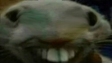

<h1>naprawde myślałeś że dodałem chatgpt do zegara???</h1>
<script type="text/javascript" src="Zegar.js"></script>
<style>
    #xpp {
    width: 800px; /* Ustawienie szerokości obrazu */
    height: auto; /* Automatyczne dopasowanie wysokości proporcjonalnie do szerokości */
}
</style>
<button onclick="wruc()">
    lol wruc
</button>
<script>
    document.write("<marquee scrollamount='15'></marquee>")
</script>